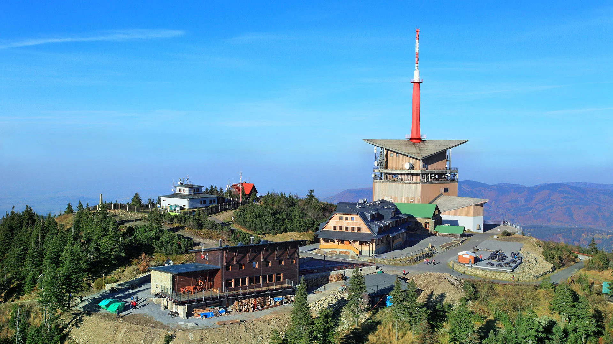

Lysá Hora (4,341 ft)
The highest peak of the Moravian-Silesian Beskydy and the third highest mountain in the Czech Republic outside the Krkonoše range. At the summit there is a mountain hut and a stone lookout tower called Šindler's Tower, from which there is a magnificent view as far as the Tatras.
- Ascent from Ostravice (blue trail) - approx. 3 hours
- Cable car access from Ostravice - fast and convenient
- Lookout tower with views of 4 countries (in good weather)
- Mountain hut with refreshments
- Suitable for families with children and demanding hikers
GPS: 49.5456°N, 18.4475°E